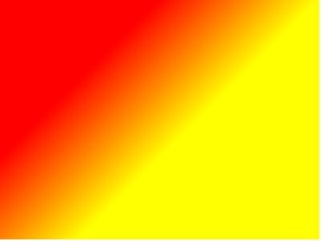

线性渐变
CSS3线性渐变的标准写法：
1 | background-image: linear-gradient([<angle> | <side-or-corner>,]? <color-stop> [,<color-stop>]+ ); |
可以看出，线性渐变效果由方向（<angle> | <side-or-corner>可选）及起止色（color-stop至少一对）控制。下面将通过控制变量法，分别对这两者进行分析。
控制渐变方向
要明白渐变方向是怎样控制的，首先要明确三个规定：
- 规定
0deg时方向为上 - 规定
0deg到180deg是顺时针方向 - 默认方向是
180deg, 向下
两个颜色的渐变描述起来是这样的：颜色A 沿着指定方向过渡到 颜色B，例如为两个颜色white和black设置渐变方向：
to bottom，就是white沿着向下方向过渡到black45deg，就是white沿着45deg方向过渡到 颜色B（black）
下面我用不同的方向值替换代码中的 to bottom 来加深理解：
1 | background: linear-gradient(to botton,white, black) |
| 关键词 | 效果 | 角度 | 效果 |
|---|---|---|---|
| 默认 | 180deg | ||
| to bottom | 180deg | ||
| to top | 0deg | ||
| to left | -90deg | ||
| to right | 90deg | ||
| to left top | -45deg | ||
| to right top | 45deg | ||
| to left bottom | -135deg | ||
| to right bottom | 135deg |
方向关键词的制订是有一个演变历史的。
控制起止颜色 <color-stop>
起止颜色不仅仅是值两个颜色值，还包括颜色的长度。它的赋值语法是：
1 | <color|stop> [ <percentage> | <length> ] |
如何理解 “颜色的长度” 呢？借用一下张鑫旭前辈一篇博文中的例子：
在一个400*300的 div 上实现一个 (100px, 100px) 到 (200px, 200px) 由红到黄的斜向线性渐变，该如何实现？

一图胜千言，根据上图分析的步骤是：
- 找出渐变方向：连接两个作用点，角度是135deg
- 找默认起止点：沿渐变方向画直线穿过元素中心（xy轴垂线交点），在元素渐变方向的两端，画两条渐变线的垂线，交点即默认起止点
- 确定颜色长度：穿过作用点画渐变线垂线，交点与开始点的距离就是长度，求它的值
$$
RedLen = 100*\sqrt{2} = 141
$$
$$
YellowLen = 200*\sqrt{2} = 282
$$
代码：
1 | background-image:linear-gradient(135deg,red 141px,yellow 282px); |
最终的渲染效果：

下面将沿着从左到右的方向，通过控制颜色数和长度变量，看下各种配置在40*30的元素中如何渲(为了方便表示，r:red，y:yellow，g:green)：
| 两个颜色 | 效果 | 三个颜色 | 效果 | 奇怪设置 | 效果 |
|---|---|---|---|---|---|
| y 0px, r 0px | y 0px, r 0px, g 0px | y -10px, r 40px | |||
| y 0px, r 20px | y 0px, r 20px, g 30px | y -40px, r 40px | |||
| y 0px, r 40px | y 10px, r 0px, g 30px | y 0px, r 50px | |||
| y 10px, r 0px | y 10px, r 10px, g 30px | y 0px, r 80px | |||
| y 10px, r 20px | y 10px, r 20px, g 30px | y 20%, r 30%, r 45%, g 55%, g 70%, b 80% | |||
| y 20px, r 20px | y 10px, r 30px, g 30px | r 30% 45%, g 55% 70%, b 80% | |||
| y 20px, r 40px | y 30px, r 20px, g 30px | y 25%, r 25%, r 50%, g 50%, g 75%, b 75% | |||
| y 40px, r 40px | y 20px, r 20px, g 20px | y 25%, r 25% 50%, g 50% 75%, b 75% | |||
| y 40px, r 0px | y 30px, r 30px, g 30px | - | - |
由上表总结就是：
- 后设颜色长度不能少于前一个颜色长度
- 下一个颜色会覆盖前一个颜色
- 两个不同颜色间存在距离才能看出渐变效果，否则就是拼接效果
- 起止点可以设置超过范围的值
除了设置颜色长度，还可通过设置两个颜色的过渡中心点位置来控制渐变。看看两者的不同：
设置颜色长度:
1 | background-image:linear-gradient(to right,red 0px,yellow 400px); |
设置中心点:
1 | background-image:linear-gradient(to right,red,200px,yellow); |
来个复杂的,默认情况：
1 | background-image:linear-gradient(to right,red,yellow,green,blue); |
设置颜色长度：
1 | background-image:linear-gradient(to right,red 0px,yellow 133px, green 266px,blue 400px); |
设置中心点：
1 | background-image:linear-gradient(to right,red,67px,yellow,200px,green,333px,blue); |
重复渐变
当渐变效果是重复性的，就可以用另外一个函数 repeating-linear-gradient来渲染。它的语法规则是这样子的：
1 | repeating-linear-gradient( [ <angle> | to <side-or-corner> ,]? <color-stop> [, <color-stop>]+ ) |
定义时，只需要设置最小精度过渡样式，重复部分交给渲染引擎。另外，为了更好的过渡效果，第一个和最后一个颜色应该相等。下表中会用变量替换指令的 red,yellow，感受下效果：
1 | background:repeating-linear-gradient(to right,red,yellow); |
| 变量 | 效果 |
|---|---|
| red,yellow | |
| r 0px,y 40px | |
| r,r 50px,y 100px | |
| r,r 50px,y 50px,y 100px | |
| r,r 3px,y 30px,y 60px | |
| r,y 25px,r 50px |
重复渐变可以做出多规律性的效果：
| 方向 | 效果 |
|---|---|
| 180deg | |
| 135deg |
效果叠加
渐变效果是可以叠加的，并且渐变颜色可以选择 transparent。
兼容性
渐变效果在 没有->提案->各浏览器带前缀实现->标准化->去前缀 过程中有所变迁，不同浏览器是否带前缀和是否带 to 关键词的实现混杂， MDN 最终给出下面跨浏览器兼容实现：
1 | .grad { |